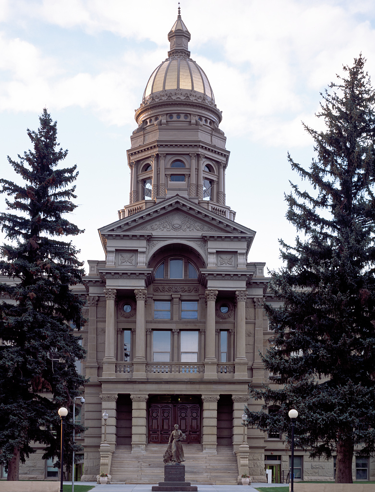

Nov 9, 2026
Unofficial returns show one House seat moving from Republican to Democratic hands. In the 2026 election, 38 of 79 legislative seats had no incumbent on the November ballot.
Research report (PDF) · Word copy (.docx)

CHEYENNE — Wyoming voters filled 79 legislative seats on Nov. 3, 2026. Unofficial returns show one seat changing party.1 In House District 11, Democrat Britney Tennant leads Republican Dan McIntosh by 54 votes, 1,080 to 1,026.1 Results are not final until the State Canvassing Board meets on Nov. 10.2
If the lead holds, the 2027 House will seat 55 Republicans and 7 Democrats. The Senate will seat 29 Republicans and 2 Democrats.3 The House elected in 2024 had 56 Republicans and 6 Democrats. The Senate was already 29 to 2 before this election.4
Seats by Party
Republicans won no seat from a Democrat. Every Democratic incumbent on the ballot won, and the only gain is House District 11.1, 5
Nine Democrats won. In the House, they are Tennant, Ken Chestek (District 13), Trey Sherwood (14) and Mike Yin (16). Liz Storer (23), Ivan Posey (33) and Karlee Provenza (45) complete the House list. In the Senate, they are Chris Rothfuss (District 9) and Mike Gierau (District 17).1, 5
In the House, Democrats won 9 of 60 seats in 2018 and 7 in 2020. They won 5 of 62 in 2022 and 6 in 2024. The 2026 total of 7 would tie 2020 and trail 2018.4 The 2022 map grew the House from 60 to 62 seats, so earlier years are not seat-for-seat comparisons.13
In the Senate, Democrats won 2 of 15 seats in 2018 and none in 2020. They won 2 of 16 in 2022, none in 2024 and 2 of 17 in 2026.4, 5 The 2026 ballot included District 6, an even-numbered seat.5
Votes in the general election tell a similar story. In races where a Republican and a Democrat both ran, Democrats took 36.1% of the two-party vote in 2026. The share was 35.8% in 2024 and 40.0% in 2022.1, 4, 5 The districts differ each year, so these totals are not a like-for-like trend.
Ten districts had both parties on the ballot in 2024 and 2026. The Democratic share there rose from 40.9% to 43.9%. In 14 districts contested in both 2022 and 2026, it rose from 39.8% to 42.3%.1, 4, 5
Statewide races were mixed. In the governor's race, the Republican share fell from 78.7% in 2022 to 68.6%. The Democratic share slipped from 16.8% to 14.7%, and a Constitution Party candidate took 16.8%.4, 6
In the U.S. House race, the Republican share fell from 69.8% to 54.5%. The Democratic share rose from 24.9% to 33.7%.4, 6
Turnout
Unofficial returns show 191,688 ballots cast. The Secretary of State listed 281,219 registered voters on Election Day, a turnout of 68.2%.7, 8 That compares with 66.6% in 2022 and 74.2% in 2018.9
Ballots cast fell 3.3% from 2022 and 6.6% from 2018. The voter roll shrank 5.5% from 2022, so the share rose while the count fell.9 Measured against estimated voting-age population, turnout was 41.5%. The figure was 44.4% in 2022 and 46.4% in 2018.10
Ballots fell from 2022 in 19 of 23 counties. Albany, Laramie, Sublette and Teton posted gains of 1.4% to 4.7%.7, 9 Niobrara had the largest drop, at 13.9%. Converse followed at 12.8%, and Platte, Campbell and Weston each fell about 10% or more.
Turnout in the Aug. 18 primary election was 54.9%. It was 54.3% in 2024 and 63.5% in 2022.9 Primary turnout is counted against registered voters the day before the vote.10
Contested Races
Of 79 legislative races, 47 had one candidate. That is 59%, up from 50% in the 2022 general election but below 77% in 2024.1, 4, 5 In 2018 and 2020, the shares were 56% and 61%.4
House District 11 was the closest race, at 2.4% of the named votes. The next closest was House District 41, where Republican Erin Edwards won by 465 votes.1
Open Seats and Incumbents
Thirty-eight seats had no incumbent on the November ballot. That covers 30 of 62 House seats and 8 of 17 Senate seats on the ballot.11
In the House, 13 incumbents lost primaries and 7 retired or did not file. Another 10 sought a different office.11 In the Senate, 1 incumbent lost a primary, 5 did not file and 2 sought another office.11
All 41 incumbents who reached the November ballot won, 32 in the House and 9 in the Senate.1, 5, 11 In 2024, incumbents left 26 of 62 House seats and 5 of 15 Senate seats.11
WyoFile reported that the Wyoming Freedom Caucus lost 13 House incumbents in the August primary.12 Those 13 names match the 13 House incumbents who lost primaries in the MTR Research count.11, 12 WyoFile projected about 10 reliable caucus votes in the House for January.12
What the Count Does Not Show
This report counts seats, votes and departures. It does not measure how members vote or where each member sits within the party.
All 2026 general figures are unofficial until the canvass. Vote shares use only races with both a Republican and a Democrat. They leave out the one-candidate races. A county-by-county partisan comparison is not part of this report.
Source: MTR Research
Credits and Sources
- Wyoming Secretary of State, 2026 General Election Unofficial Results, House Districts summary (last updated 11/3/26 23:56 MST). https://sos.wyo.gov/Elections/Docs/2026/Results/General/2026_General_Statewide_House_Candidates_Summary.pdf
- Wyoming Secretary of State news release, "Wyoming State Canvassing Board to Meet for 2026 General Election," Nov. 6, 2026. https://sos.wyo.gov/Media/2026/SoS_Release_2026-11-06.pdf
- Wyoming Legislature, 2027 House and Senate member lists, retrieved Nov. 9, 2026. https://wyoleg.gov/LsoService/api/legislator/2027/H and https://wyoleg.gov/LsoService/api/legislator/2027/S
- MTR Research, Race Results, compiled from Wyoming Secretary of State official results for 2018 through 2024. https://sos.wyo.gov/Elections/Docs/2024/Results/General/2024_Wyoming_General_Results.zip
- Wyoming Secretary of State, 2026 General Election Unofficial Results, Senate Districts summary (last updated 11/3/26). https://sos.wyo.gov/Elections/Docs/2026/Results/General/2026_General_Statewide_Senate_Candidates_Summary.pdf
- Wyoming Secretary of State, 2026 General Election Unofficial Results, Statewide Candidates summary (last updated 11/3/26). https://sos.wyo.gov/Elections/Docs/2026/Results/General/2026_General_Statewide_Candidates_Summary.pdf
- Wyoming Secretary of State, 2026 General Election Unofficial Results, Total Ballots Cast summary (last updated 11/3/26 23:54 MST). https://sos.wyo.gov/Elections/Docs/2026/Results/General/2026_General_Statewide_Total_Ballots_Cast_Summary.pdf
- Wyoming Secretary of State, Voter Registration Statistics, General Election Day, Nov. 3, 2026. https://sos.wyo.gov/Elections/Docs/VRStats/2026/26Nov3_GeneralElection_VR_Stats.pdf
- MTR Research, Turnout History, from Wyoming Secretary of State ballot and registration statistics. https://sos.wyo.gov/Elections/VRStats.aspx
- Wyoming Secretary of State, Wyoming Voter Registration and Voter Turnout Statistics (revised 08/2026); 2026 share is an MTR Research calculation. https://sos.wyo.gov/Elections/Docs/VoterProfile.pdf
- MTR Research, Seat Turnover, from Wyoming Secretary of State results and Wyoming Legislature member lists. https://sos.wyo.gov/Elections/Docs/2024/Results/Primary/2024_Wyoming_Primary_Results.zip
- WyoFile, Maya Shimizu Harris, "In stunning upset, Wyoming Freedom Caucus loses most of its House seats, backslides in Senate," Aug. 19, 2026. https://wyofile.com/in-stunning-upset-wyoming-freedom-caucus-loses-most-of-its-house-seats-backslides-in-senate/
- Wyoming Legislature, 2022 HB0100, Redistricting of the legislature (Enrolled Act 62, Session Laws 2022, Chapter 112). https://wyoleg.gov/Legislation/2022/HB0100